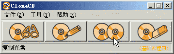
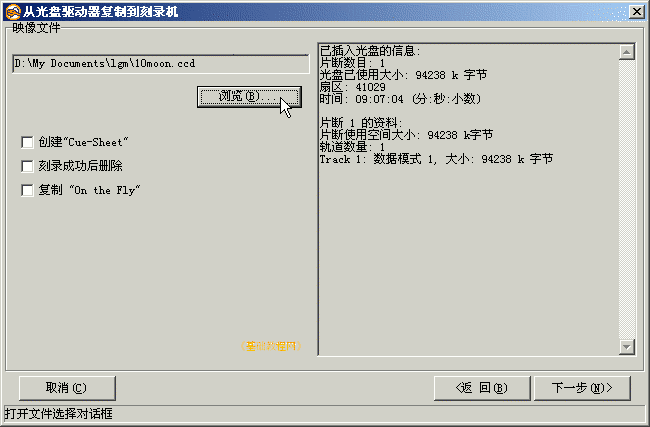

光盘刻录基础教程
作者：TeliuTe 来源：基础教程网
使用刻录软件，可以对现有的光盘进行复制，下面我们来看一个练习；
1、准备光盘
1）如果有两个光驱，可以在光驱中放入光盘，在刻录机中放入空白盘；
2）如果只有一个刻录机，先放入数据光盘，根据提示稍后放入空白盘，刻录机一般只做刻录使用，以延长使用寿命；
2、复制光盘
1）启动克隆ccd，在主窗口选择第三个按钮，复制光盘到一张空白盘；

2）首先出来的是读取数据光盘，如果只有一个刻录光驱，放入数据光盘后，点“下一步”，
如果还有一个光驱，放入光盘后，选择这个光驱后点“下一步”；
3）接下来选择数据光盘的类型，然后点“下一步”继续；
4）首先制作映像文件，点“浏览”设定映像文件的保存位置和文件名，然后点“下一步”；

5）然后开始制作映像，完成后弹出光盘，按提示插入空白盘，然后点“确定”继续；
6）接下来准备刻录，选择刻录速度和光盘类型，检查无误后，点“确定”开始刻录；
7）然后耐心等待刻录完成，自动弹出光盘，取出光盘关好托盘，这样就复制好了一张光盘；
本节学习了复制光盘的基本方法，如果你成功地完成了练习，请继续学习下一课内容；
本教程由86团学校TeliuTe制作|著作权所有
基础教程网：http://teliute.org/
美丽的校园……
转载和引用本站内容，请保留版权信息和本站链接。